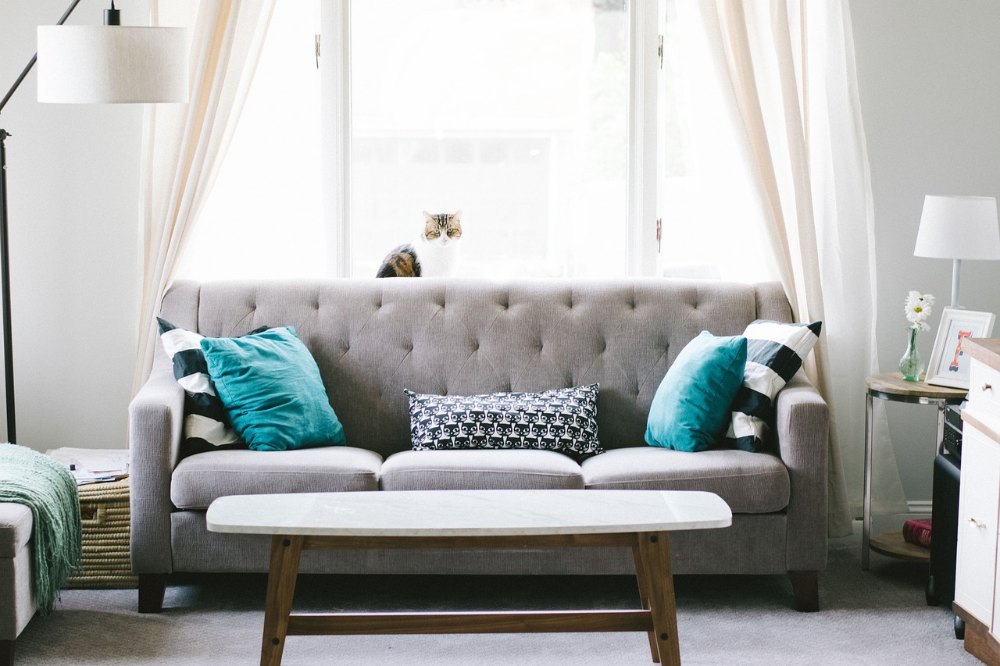

En nuestra web vas a conocer las distintas secciones para que conozcas paso a pasos a que nos dedicamos.
Somos un estudio de proyectos de decoración para el hogar actual de estilo minimalista
↓
En nuestra web vas a conocer las distintas secciones para que conozcas paso a pasos a que nos dedicamos.
Somos un estudio de proyectos de decoración para el hogar actual de estilo minimalista
En ella encontrarás ideas para decorar tu casa, sea tu hogar habitual o lugar de vacaciones
Esta es nuestra página donde mostramos nuestros proyectos y servicios. Descubre paso a paso nuestras secciones.
La decoración minimalista constituye en la actualidad una tendencia definida para el diseño de interiores, con presupuestos ajustados y con un estilo preciso.

Somos una empresa especializada en la decoración textil para interiores.
Los decoradores de interiorismo diseñamos y embellecemos espacios interiores, seleccionando colores, muebles, iluminación y accesorios para lograr ambientes funcionales, estéticos y acordes al estilo y necesidades del cliente.
Nuestro equipo de profesionales le orientará sobre las mejores soluciones.
Diseñando habitaciones, tomando medidas, eligen paletas de colores, seleccionan muebles, textiles y accesorios, optimizan la iluminación, combinan estilos, crean planos visuales, asesoran al cliente y supervisan la instalación.
Buscamos armonía estética, funcionalidad y personalización, adaptando cada espacio según las necesidades y gustos del cliente.
► Si desea más información contacte con nosotros AQUI
En nuestros vídeos explicativos podrás descubrir las características del diseño minimalista comenzando con el primer vídeo donde se muestra una habitación al detalle
En los siguientes vídeos puede encontrar tutoriales para instalar un estor de forma fácil, decorar en espacios pequeños, las tendencias de decoración actuales, crear hogares cálidos y elegantes, ideas de decoración minimalista y otros consejos.
Episodio 1: Porqué hacer un proyecto de decoración
Episodio 2: Las ventajas de la decoración minimalista
Episodio 3: Las habitaciones en la decoración minimalista
Descubre en nuestros podcasts una serie de consejos para tu hogar minimalista.
Siga al momento nuestras publicaciones
Nos pueden ver, seguir y compartir nuestros contenidos
Contacte con nosotros. A continuación detallamos nuestra ubicación y formulario.
Gran Vía de Colón, 32
18010-GRANADA
Telefono 858 999 999
Horario de 10h a 18h
Mapa de localización:
Rellene sus datos, escriba su consulta en el apartado Asunto y pulse en Enviar.
Contactaremos a la mayor brevedad.
Estas son las reseñas recibidas hasta el momento